Конкурс СберИндекса 2026 · трек «Прогнозирование»
Прогноз безналичных расходов муниципалитетов и поиск структурных сдвигов
12 096 рядов (2016 МО × 6 категорий), 24 месяца. Горизонты 1, 3, 6, 12 месяцев. Честная проверка на отложенном окне 2024-07..12.
Архитектура
Сезонность и инфляция общие для всей страны. Их оцениваем по срезу из 2016 МО (национальная компонента), а модели прогнозируют только локальное отклонение МО. Это решает главную проблему данных: у ряда всего 24 точки, и перед прогнозом на 12 месяцев нет даже одного года истории.
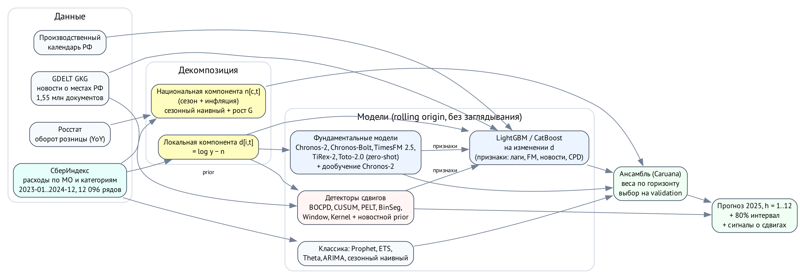
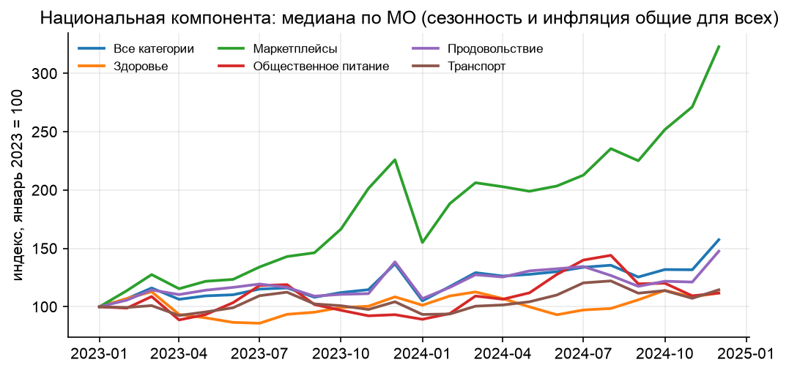
Сравнение моделей (test, MAE, руб. на жителя в месяц)
| Модель | h=1 | h=3 | h=6 | h=12 |
|---|---|---|---|---|
| Наивная | 624 | 864 | 1124 | 1289 |
| Сез. наивная + рост | 340 | 469 | 663 | 1289 |
| Prophet (базовая) | 563 | 574 | 652 | 1361 |
| Theta | 614 | 744 | 767 | 922 |
| LightGBM v1 | 313 | 420 | 761 | 969 |
| Декомпозиция | 318 | 566 | 526 | 691 |
| TimesFM 2.5 (декомп.) | 296 | 522 | 493 | 729 |
| Chronos-2 дообуч. (декомп.) | 308 | 528 | 527 | 771 |
| GBM: всё (LightGBM) | 296 | 532 | 509 | 724 |
| GBM: всё (CatBoost) | 302 | 536 | 513 | 712 |
| Ансамбль | 306 | 435 | 446 | 658 |
Каждая модель в момент прогноза видит только прошлое. Веса ансамбля выбраны на validation (2024-01..06), test не использовался ни для какого выбора. R² на уровнях для ансамбля: h=1: 0.998, h=3: 0.996, h=6: 0.995, h=12: 0.991; R² на изменении: h=1: 0.42, h=3: 0.59, h=6: 0.53, h=12: -0.17.
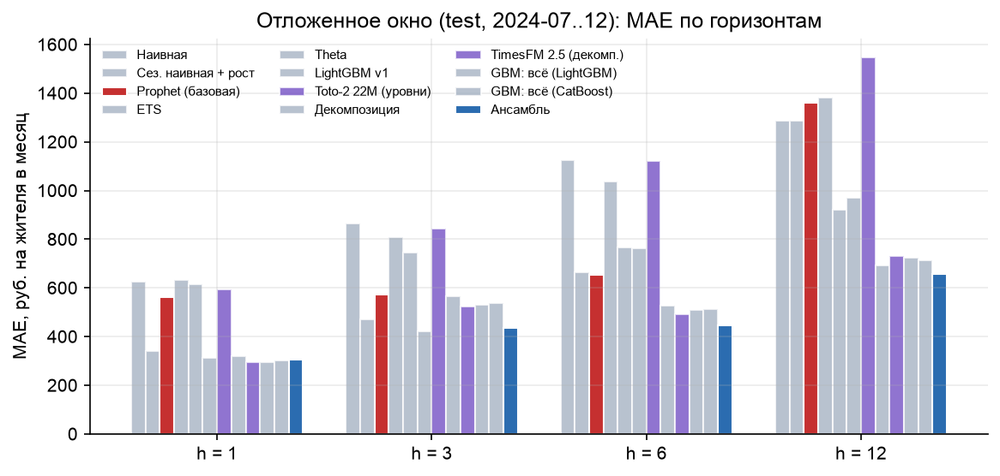
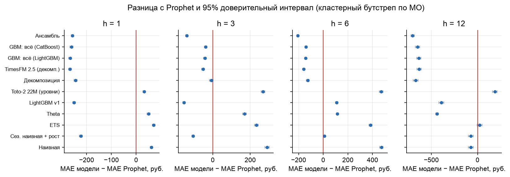
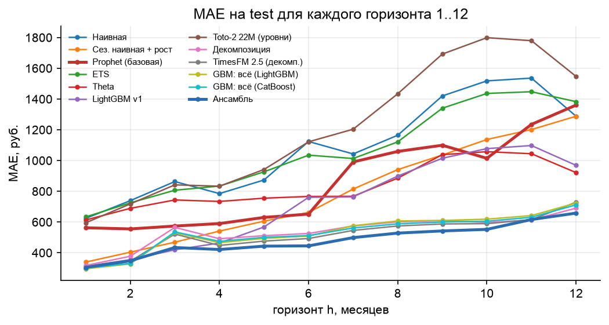
Фундаментальные модели
Восемь открытых моделей (Apache-2.0): Chronos-Bolt S/B, Chronos-2 (уни- и мультивариантный), TimesFM 2.5, TiRex-2, Toto-2.0 22M/313M, плюс каузальное дообучение Chronos-2. На сырых уровнях zero-shot проигрывает даже наивной модели: модели не видят календарь, а в 24 точках нет повторяющейся сезонности. На локальной компоненте те же модели снижают MAE в 1.5-3 раза и входят в ансамбль (−6% MAE ансамбля на h = 6).
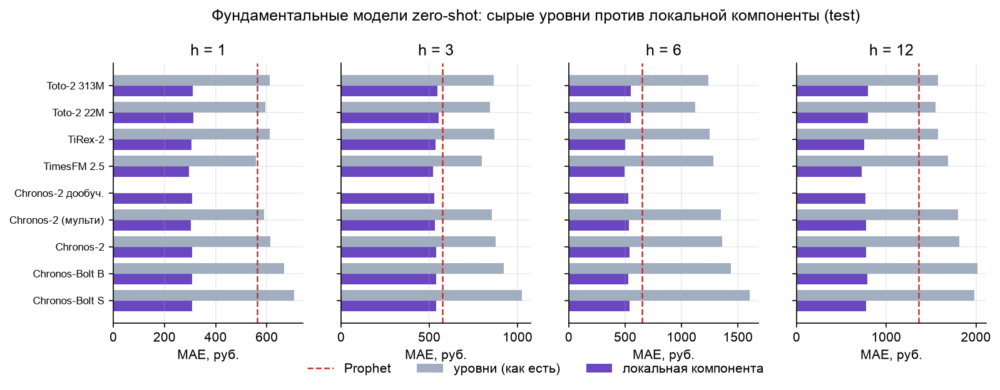
Структурные сдвиги
Детекторы откалиброваны на одинаковую частоту ложных тревог (≈2% на ряд-месяц), затем сравниваются на синтетических сдвигах, вставленных в реальные ряды.
| Детектор | F1 (сдвиг 10%) | Задержка, мес. | Тревога на выбросе | Ложные тревоги, % |
|---|---|---|---|---|
| bocpd_confirm | 0.82 | 1.19 | 0.54 | 1.30 |
| bocpd | 0.78 | 0.34 | 0.90 | 1.60 |
| window_online | 0.77 | 1.62 | 0.56 | 1.20 |
| pelt_online | 0.76 | 0.70 | 0.74 | 1.50 |
| binseg_online | 0.75 | 0.69 | 0.74 | 1.40 |
| spike | 0.58 | 0.00 | 0.86 | 0.80 |
| resid_cusum | 0.48 | 0.27 | 0.79 | 1.30 |
| cusum | 0.40 | 1.36 | 0.21 | 1.40 |
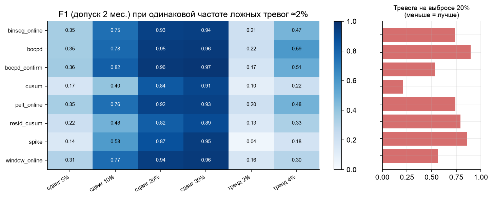
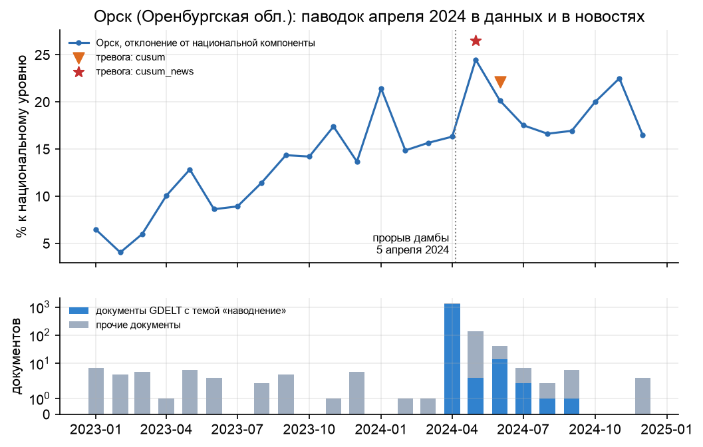
Новости
1,55 млн документов GDELT GKG о местах РФ. Город привязывается к МО по расстоянию и совпадению названия. Темы (наводнение, бедствие, экономика, безопасность) и тональность → признаки GBM и априорная информация для детекторов сдвигов.
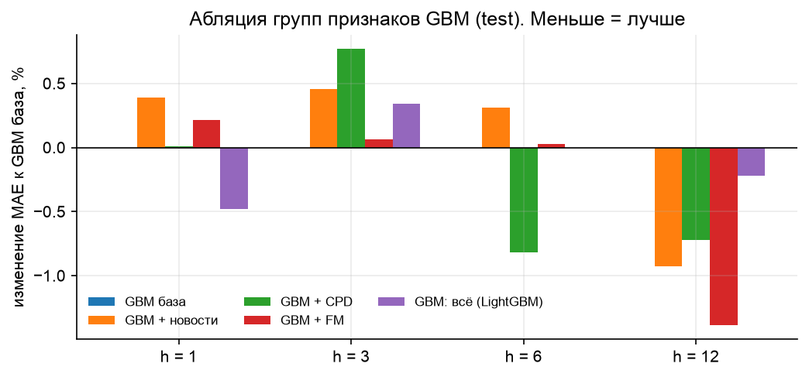
Прогноз на 2025 год
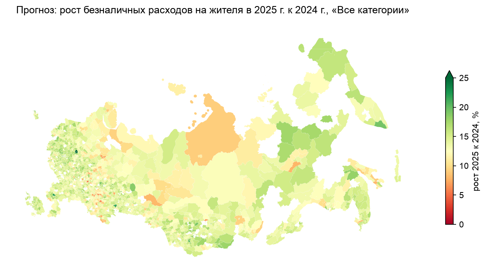
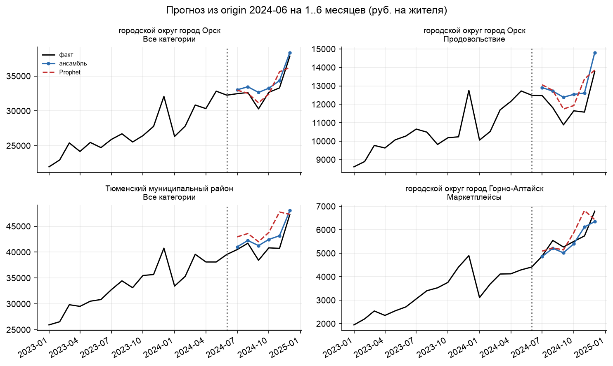
Код, конфиги и инструкция запуска: репозиторий проекта (README). Данные организатора в репозиторий не входят.